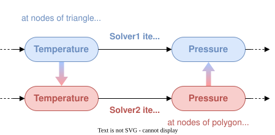

This section aims to underline the structure of a coupling set up in this new version of CWIPI. The concepts will be detailed working with the following coupling scheme:

Coupling
To set up the coupling between Solver1 and Solver2 one needs to create a Coupling instance to which general information such as the dimension of the coupling interface will be associated.
Mesh
Then the coupling interface needs to be specified (see Define mesh).
In this case, we set a 2D triangle and quadrangle mesh for Solver1 and a polygon mesh for Solver2.
After setting the mesh coordinates, a so called block of the mesh elements should be added.
This means that in the mesh instance a block for the given type of elements will be added.
After creating this block, the mesh element data can be given using the add function for standard elements (CWP_Mesh_interf_block_std_set in C) for Solver1 and for polygons (CWP_Mesh_interf_f_poly_block_set in C) for Solver2.
For CWIPI to be able to do the internal geometric computations on the mesh, it must be “finalized” (CWP_Mesh_interf_finalize in C).
Fields
It is mandatory to define the interface mesh before creating field instances. The degrees-of-freedom (dof) of a Field can either be located at mesh nodes, cell centers or a user-defined points. There can be no more than one user-defined point cloud per Coupling object.
For Solver1 a field instance for sending the temperature will be created and another instance for receiving the pressure. For Solver2 the opposite will be done.
Control Parameters
à remplir